MXFP 自适应位宽存内计算零基础精讲：一个宏，从简单推理做到训练 A 28nm 127.54TFLOPS/W MXFP6 and 117.42TFLOPS/W MXFP8 Compute-in-Memory Macro with Adaptive-Preserved-Bit-Width and Serial-Dual-Bit-Sliding Schemes（ISSCC 2026 · Paper 30.1）
模型越来越大（DeepSeek-V3 都用 FP8 训练了），低比特浮点 MXFP6/MXFP8 成为新宠。但现有浮点 CIM 的保留位宽（PBW）是固定的——简单推理用高精度浪费、训练用低精度不够。这篇来自东南大学司鑫组（联合小米、北大）的论文，做出了首个宽范围自适应 PBW 的 MXFP-CIM（3b→27b 可调），靠三招：
- SDBS（串行双位滑动）：让输入尾数每周期滑 2b、垂直截断地完成浮点乘法 → 无无效位浪费，乘积压缩器只用 6 个全加器（加法树输入位宽 −42.9%、面积 −35.9%、功耗 −40%）；
- HDM（无害数据映射）+ 层次化隐藏位解码器：MXFP6/8 两种格式都塞满同一块存储（内存容量满用），解码器面积 −63.1%；
- 双级分配（CGA + FGA）：按层粗调（−14.8% 平均位宽）、按组精调（再 −29.3%），精度无损。
28nm 实测：MXFP6 127.54 TFLOPS/W、MXFP8 117.42 TFLOPS/W、面积效率 4.44 TFLOPS/mm²。
- MXFP 是什么：Microscaling 格式——一组 32 个数共享一个 8b 尺度（E8M0），每个数只带小浮点（MXFP6=E2M3，MXFP8=E4M3）。比“每数全指数”省一半以上位数，比整数动态范围大。
- 保留位宽（PBW）决定精度和开销：PBW 是浮点乘法里“保留参与计算的尾数位数”。PBW 大 → 准但费电费周期；PBW 小 → 省但可能掉精度。不同模型/层/组需要的 PBW 不一样——这就是“自适应”的意义。
- “垂直截断”为什么重要：浮点乘法要先对齐指数。如果按“斜着”截断尾数，会产生无效位混进加法树（白算）；本论文用“每周期滑 2b”的方式保证截断永远是整列的（垂直）→ 不浪费任何算力。
§0.1摘要逐句精读
| 原文（摘录） | 人话解释 |
|---|---|
| “low-bit floating-point (FP) formats such as MXFP6 and MXFP8 have emerged as promising alternatives… Deepseek-V3 demonstrated successful FP8-based training” | 低比特浮点 MXFP6/8 是趋势；DeepSeek-V3 用 FP8 完成训练与商用——产业已验证。 |
| “conventional FP computing architectures rely on fixed preserved bit-width (PBW), constraining both flexibility and efficiency” | 现有浮点架构的保留位宽固定 → 对不同模型/层的需求不灵活、不高效。 |
| “A serial dual-bit-sliding (SDBS) scheme that enhances FP multiply-accumulate (MAC) computation efficiency by eliminating redundant operations” | 创新①：串行双位滑动，消除冗余运算（垂直截断）。 |
| “A harmless data mapping (HDM) scheme with a hierarchical hidden-bit decoder… fully utilizes memory capacity” | 创新②：无害数据映射 + 层次化隐藏位解码器，内存容量满用。 |
| “An adjustable-PBW MXFP-MAC circuit via twin-stage allocation” | 创新③：双级分配实现可调 PBW，精度-效率按层/组权衡。 |
| “peak energy efficiency of 127.54TFLOPS/W in the MXFP6/6 mode” | 实测：MXFP6/6 峰值能效 127.54 TFLOPS/W。 |
§0.2论文的核心贡献清单
- SDBS 串行双位滑动：垂直截断 + ESUM 优先级滑动 + PBW 随周期数伸缩（2~14 周期），6 全加器压缩器（−42.9% 位宽 / −35.9% 面积 / −40% 功耗）；
- HDM 无害数据映射：MXFP8（9 数/子阵列）与 MXFP6（12 数/子阵列）都塞满同一 18×4 阵列；层次化解码器 −63.1% 面积；
- 双级分配：层级 CGA −14.8%、组级 FGA −29.3% 平均 PBW，精度无损；
- 宽范围 PBW（3b→27b）：BERT 3~9b、LLaMA 11~17b、训练 19~27b（ResNet-18 略胜 BF16）；
- 实测成绩：MXFP6 127.54 / MXFP8 117.42 TFLOPS/W、4.44 TFLOPS/mm²、FoM 提升 2.8–123×。
完全零基础：按 01→09 顺序读，重点玩 3 个交互仿真、看 3 个视频，约 60 分钟。已经懂浮点 CIM 的：从 §4（SDBS）和 §6（双级分配）开始。
§1背景：为什么需要 MXFP 低比特浮点
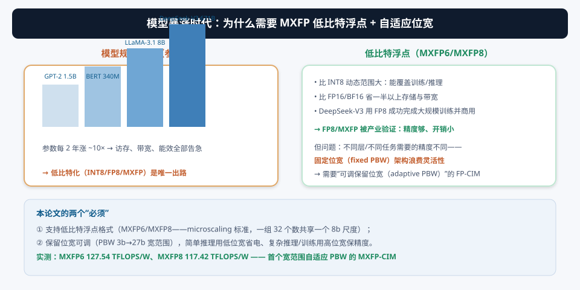
模型参数每两年涨约 10×（GPT-2 1.5B → DeepSeek-V3 671B），访存、带宽、能效全线告急。两个事实把“低比特浮点”推上台前：① INT8 动态范围不够（训练、大模型敏感层掉精度）；② FP16/BF16 太贵（16 位存储/带宽）。MXFP6/MXFP8 用“块共享尺度”在两者之间找到平衡——8 位（或 6 位）的表面积，接近 16 位的动态范围。DeepSeek-V3 用 FP8 训练并商用，就是最硬的产业证据。
但问题随之而来：不同任务需要的精度不一样。BERT 这类中小模型低位宽就够（省电），LLaMA 8B 需要中位宽（近无损），训练则需要高位宽（保梯度精度）。固定位宽的 FP-CIM 只能按“最坏情况”设计 → 简单任务也花高位宽的钱。所以论文提出两个需求：① 支持低比特 FP 格式；② 保留位宽（PBW）可调。
§2MXFP 格式基础：块共享尺度与隐藏位
2.1 块共享尺度（E8M0 共享尺度 SS）
MXFP（Microscaling，微缩放）是 NVIDIA/AMD/Arm/Intel 等推动的开放格式。核心洞察：相邻数据的“数量级”通常差不多，所以没必要每个数都带完整指数——32 个数共享一个尺度 SS，每个数只保留自己的符号、小指数和尾数。这样：
- MXFP8（E4M3）= 1 符号 + 4 指数 + 3 尾数，共 8 位/数 → 存储和带宽比 BF16 省一半；
- MXFP6（E2M3）= 1+2+3 = 6 位/数 → 更省；
- 动态范围由 SS 撑起来（E8M0 有 8 位指数），比 INT8 大得多。
2.2 隐藏位（Hidden Bit）与正常/次正规数
浮点数的尾数在“正常数（normal）”下隐含前导 1（1.M），但“次正规数（subnormal）”尾数前导是 0（0.M）。硬件做乘法时必须把隐藏位真实地解出来（1 或 0）参与运算——不能假设它恒为 1。这个“隐藏位解码器”如果每个计算单元都放一个大的，面积很可观。本论文的 HDM 用“全局预解码 + 本地小解码”把它摊薄（§5）。
先把隐藏位、符号-数值（SM）与二进制补码（2C）的关系记牢：论文写权重时把权重从 SM 格式转成 2C（{SW, MW[3:0]}），MW[3] 就是隐藏位——它由“指数是否全 0”决定。
§3FP-CIM 的三大挑战（论文的问题定义）
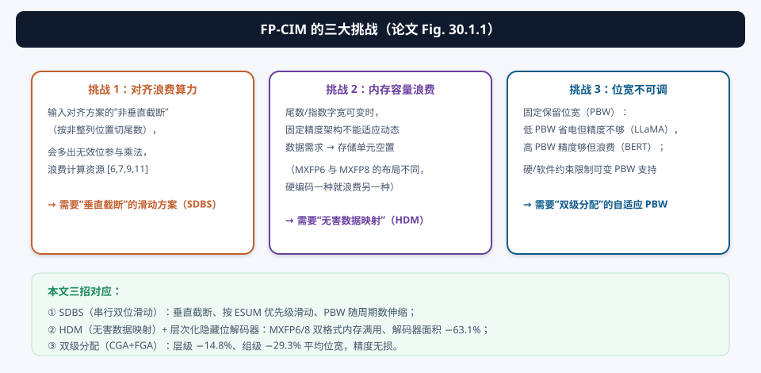
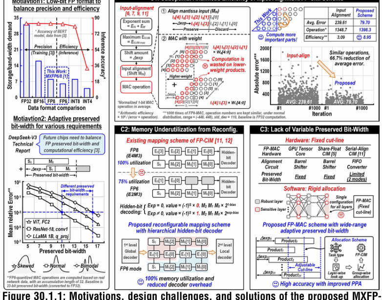
| 挑战 | 本质 | 本文对策 |
|---|---|---|
| ① 对齐浪费算力 | 输入对齐方案的“非垂直截断”产生无效位 | SDBS 滑动：垂直截断、无冗余运算 |
| ② 内存容量浪费 | 尾数/指数位宽可变时固定布局不适应 | HDM 映射：MXFP6/8 都塞满，隐藏位不占位 |
| ③ 位宽不可调 | 固定 PBW 无法按任务/层/组自适应 | 双级分配：CGA + FGA 动态分配 PBW |
§4创新①：SDBS 串行双位滑动
4.1 垂直截断：为什么“滑动”比“对齐”省算力
浮点 MAC 的麻烦在“对齐”：输入尾数要按指数差移位再相乘。传统输入对齐方案（[6,7,9,11]）在对齐后直接截断，截断边界是斜线——产生一批“半列”的无效位，它们照样进加法树，白白增加位宽和功耗。SDBS 换了个顺序：让输入 MIN 相对权重 MW 每周期“滑 2b”，每次滑动产生的部分积天然是整列（垂直）的——截断永远落在列边界上，零无效位。
4.2 SDBS 流程与 DBSU

关键设计点：
- ESUM 优先级：指数和（ESUM）大的输入对结果贡献大，SDT 让它们更早开始滑动——高位优先对齐，低位自然截断；
- DBSU（双位滑动单元）：时钟门控 + 1b 移位器 + MIN 存储模块 + 滑动结果（SR）模块（8T-C2MOS 动态寄存器，省面积省功耗）。初始 MIN 存储 = MIN[4:0]、SR = 符号位；SC 由 0→1 时开时钟，每周期移 2b；ESUM[0] 决定 1b 移位器接法（奇偶对齐）；
- 乘积压缩器：只用 6 个全加器把位积压成 4b 值（CVs）→ 加法树输入位宽 −42.9%、面积 −35.9%、功耗 −40.0%；
- PBW = 周期数：PBW 3b 用 2 个周期、27b 用 14 个周期——精度直接映射成周期数，位宽分配器改周期数就能调精度，这是“自适应 PBW”的电路级基础。
4.3 视频与仿真
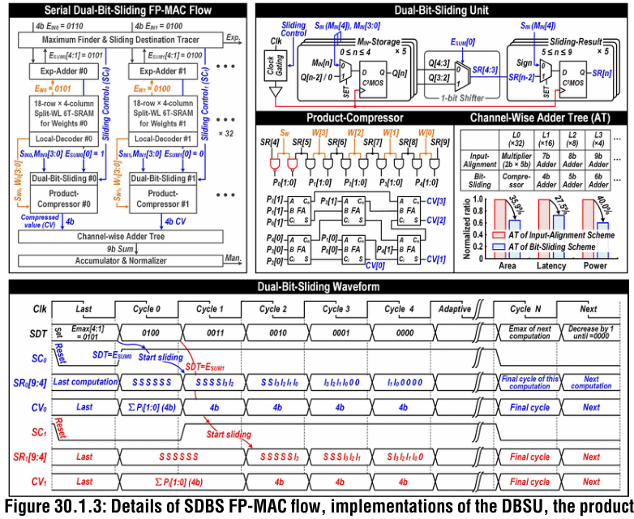
§5创新②：HDM 无害数据映射与层次化隐藏位解码器
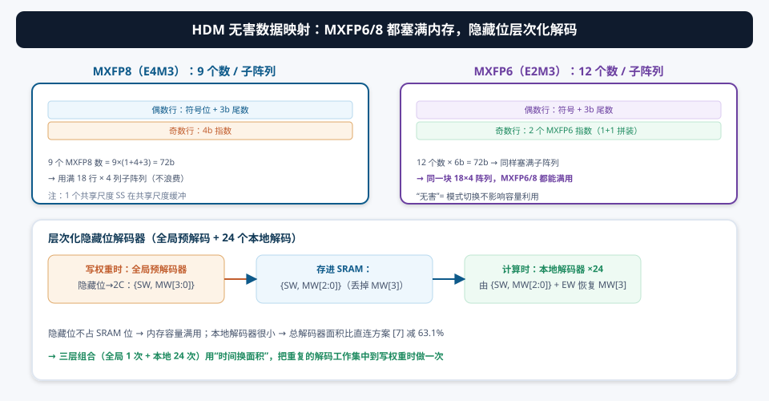
问题：MXFP6 和 MXFP8 的“每数位数”不同（6b vs 8b），如果存储器按一种格式硬编码布局，切到另一种格式就会浪费容量。论文的 HDM（Harmless Data Mapping，无害数据映射）让两种格式都“塞满”同一块存储：
- MXFP8（E4M3）：每个 18 行 × 4 列子阵列放 9 个数——偶数行存“符号 + 3b 尾数”，奇数行存“4b 指数”；9 × 8b = 72b 正好等于子阵列容量；
- MXFP6（E2M3）：每子阵列放 12 个数——偶数行存“符号 + 3b 尾数”，奇数行并排 2 个 MXFP6 指数；12 × 6b = 72b，同样满用。
隐藏位解码器（解决 §2.2 的问题）：
- 写权重时（全局预解码器，只有 1 个）：把隐藏位解出来，权重从符号-数值（SM）转成 2C（{SW, MW[3:0]}），然后丢掉 MW[3]（隐藏位），只把 {SW, MW[2:0]} 写进 SRAM；
- 计算时（24 个本地小解码器）：由 {SW, MW[2:0]} 和指数 EW 恢复 MW[3]。
① 隐藏位不占存储：MW[3] 在写权重时算好扔掉，SRAM 不存它 → 每个数省 1 位，内存容量满用；② 解码器面积摊薄：复杂的隐藏位判断（SM→2C、查指数是否全 0）集中在“只做一次”的全局预解码器里，24 个本地解码器只做简单的“恢复”，总解码器面积比“每个单元都放完整解码器”的直接方案 [7] 减 63.1%。
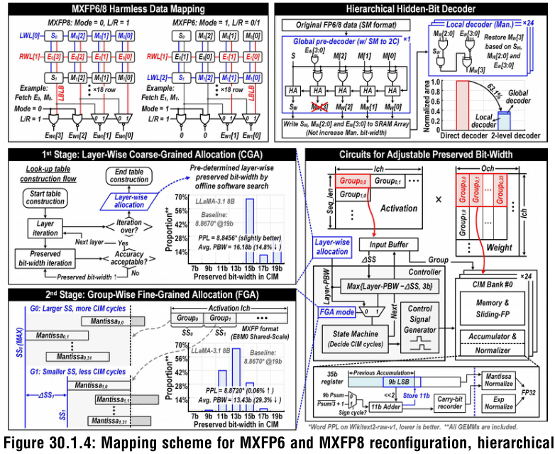
§6创新③：双级分配（Twin-Stage Allocation）—— 自适应 PBW
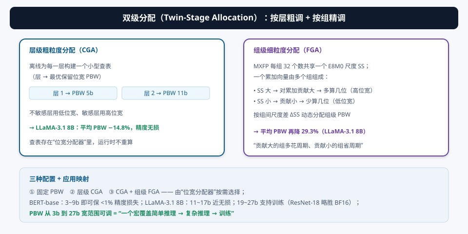
有了“PBW = 周期数”的电路基础（§4），还需要“给谁分配多少位”的决策器。论文的双级分配在两层粒度上找最优 PBW：
- 层级粗粒度分配（CGA）：离线为每一层构建一个小型查表（层 → 最优 PBW），迭代扫描所有层后存进“位宽分配器”。不敏感层用低位宽、敏感层用高位宽 → LLaMA-3.1 8B 平均 PBW −14.8%、精度无损；
- 组级细粒度分配（FGA）：MXFP 格式里每组 32 个数共享一个尺度 SS，一个累加向量由多组组成。SS 大的组对累加结果贡献大 → 多分配周期（高位宽）；SS 小的组贡献小 → 少分配（低位宽）。按组间尺度差 ΔSS 动态分配 → 平均 PBW 再降 29.3%。
浮点累加的本质是“大数吃小数”：SS 大的组（数量级大）决定结果，SS 小的组（数量级小）贡献可忽略。给大组多算几位、小组少算几位，就是把有限的周期数（算力）优先分配给对结果影响最大的数据——这是“精度-效率帕累托优化”的教科书式应用。
§7系统架构与数据流：54kb、24 个 bank

- 规模：54kb = 24 × 18 × 128b，28nm；
- 每 bank：18 行 × 128 列分裂字线（split-WL）6T-SRAM + 本地解码器 + 指数处理单元（EPU）+ 尾数 MAC 单元（SDBS）；
- 配置：三种模式——① 固定 PBW；② 层级 CGA；③ CGA + 组级 FGA；
- 三种 MXFP6/8 组合，PBW 从 3b 到 17/23/27b 宽范围可调。
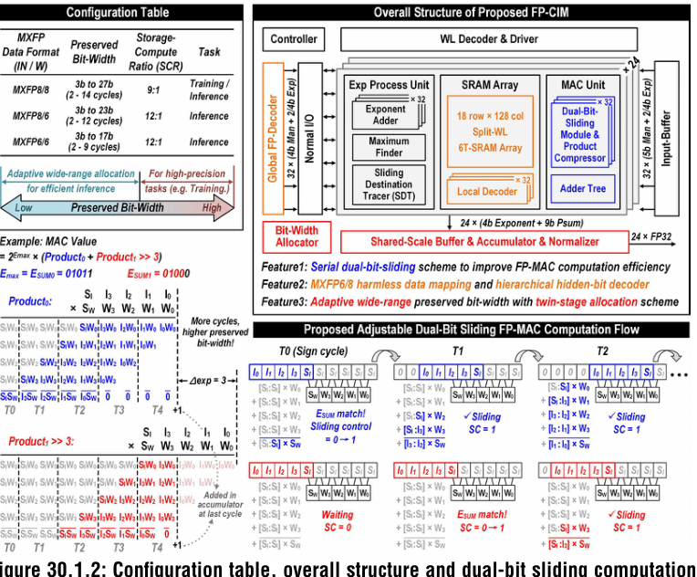
MXFP8 与 MXFP6 的“指数行 / 尾数行”布局不同（§5），分裂字线让每行可以独立选通：写 MXFP6 时奇数行按“2 个指数并排”的方式写，写 MXFP8 时按“1 个指数”的方式写——同一个物理阵列，两种逻辑布局，这就是“无害映射”的物理支撑。
§8实测与对比：28nm 芯片的成绩单
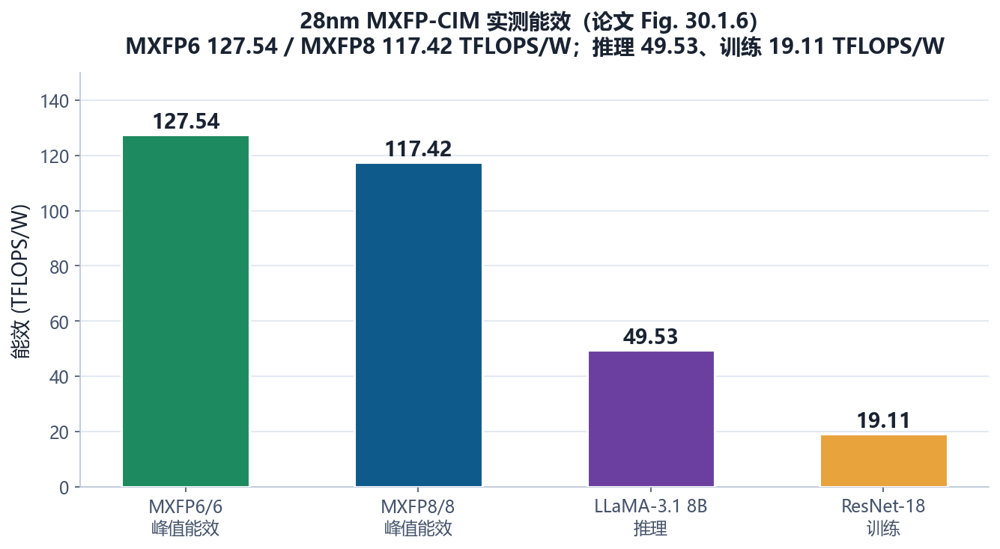
- 面积效率：4.44 TFLOPS/mm²（MXFP8 @0.9V）；
- 频率：1.2 ns 时钟周期 @0.9V（Shmoo 确认）；
- FoM（平均能效 × 归一化面积效率 × 存储密度）：相对前作 SRAM FP-CIM [5-11] 提升 2.8×–123×；
- 精度：LLaMA-3.1 8B 推理近无损、ResNet-18 @CIFAR-100 训练略优于 BF16。
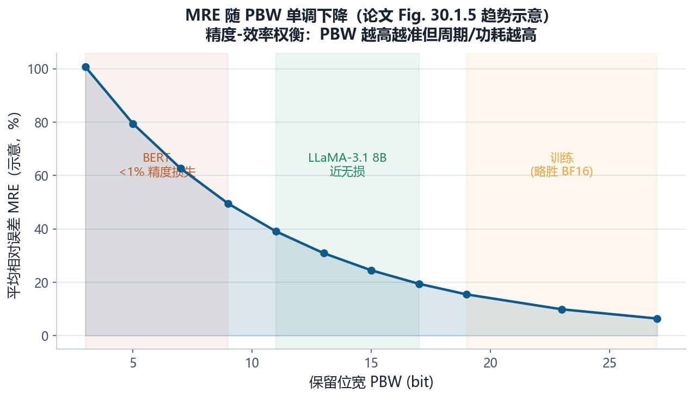
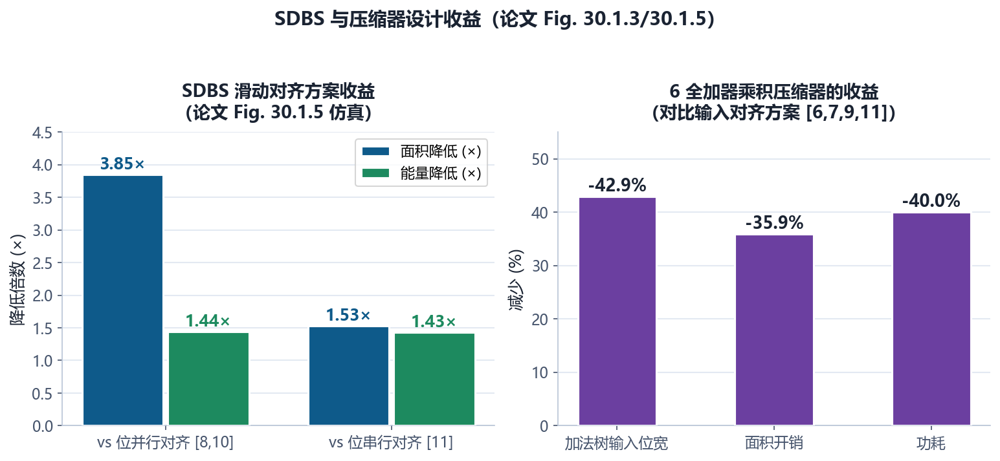
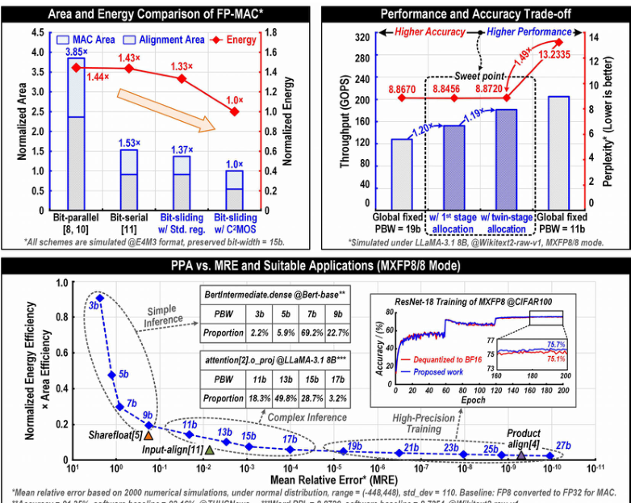
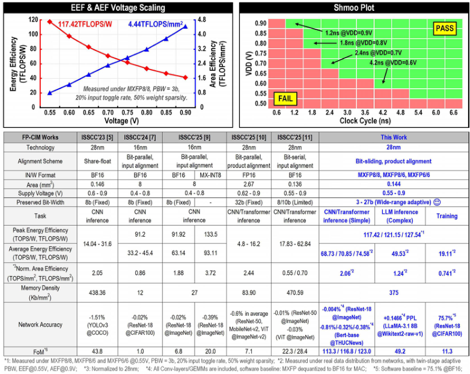
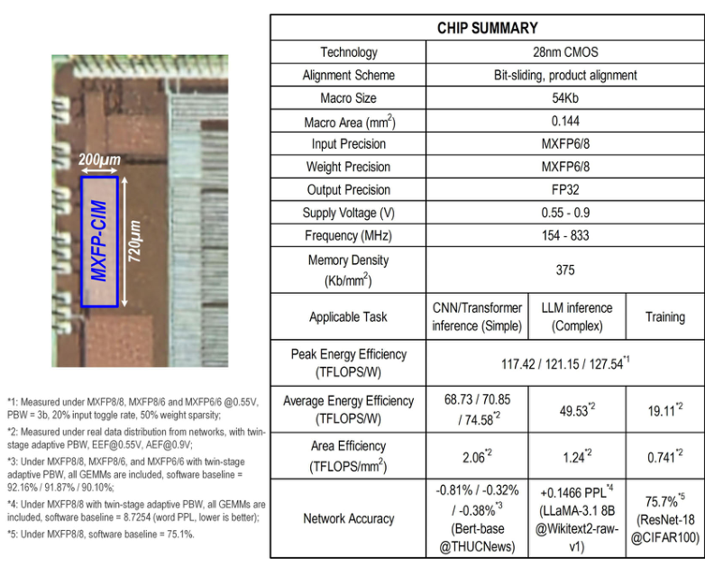
① FoM 提升跨度 2.8–123× 极大：对比对象包括 CNN 推理与 Transformer 推理、不同位宽、不同工艺——数字只能说明“量级占优”，不能当精确倍数；② “训练略优于 BF16”是有条件的（ResNet-18 @CIFAR-100，特定 PBW 配置），不是普遍结论；③ 能效数字依赖稀疏度/翻转率条件，读论文时先找“测试条件”再比数字。
§9未来研究方向 · 术语表 · 参考资料
9.1 未来研究方向
- MXFP 生态与编译器：MXFP 是开放标准（NVIDIA/Arm/Intel/AMD 推动），但“每层/每组装什么位宽”目前靠论文的离线查表。做一个自动化的 MXFP 精度-位宽编译器（输入 PyTorch 模型 → 输出 CGA/FGA 配置），是软硬协同的下一个金矿；
- 在线自适应：本文 CGA 是离线的。能否在运行时根据“激活分布/异常值”实时调整 PBW（在线 FGA）？配合轻量监控电路，精度-效率可以更贴近实际数据分布；
- 块浮点（Block FP）融合：MXFP 的 E8M0 已经是“块共享尺度”。把“尺度”从 32 个一组扩展到更大的块（如整行/整层共享），SDBS 的 ESUM 对齐会更简单——这是格式与架构的联合设计空间；
- 训练支持深化：本文证明训练可行（ResNet-18）。训练还需要反向传播（梯度 MAC）、权重更新（写带宽）、优化器状态——把 MXFP-CIM 扩展成“推理+训练一体化”流水线（与 03/17 号论文的 FP 训练方向呼应）；
- 与稀疏/异常值结合：LLM 权重有 outlier（异常值），MXFP 的 E8M0 尺度其实是为 outlier 设计的。把“异常值感知”（19 号论文方向）和自适应 PBW 结合：outlier 组给高位宽、普通组给低位宽；
- 更低位宽（MXFP4）与更大动态范围：MXFP4 已经在研究中（LLM-FP4）。SDBS 滑动 2b 的粒度能否降到 1b 支持 MXFP4？PBW 下限能否降到 1~2b？
- 工艺与集成：28nm → 更先进节点；把 MXFP-CIM 作为计算宏嵌入 SoC（配合 RISC-V 核与 DMA），形成完整的边缘 LLM 推理/微调芯片。
9.2 术语表
- MXFP（Microscaling Floating-Point，微缩放浮点）
- 一组 32 个数共享一个 8b 尺度（E8M0）的低比特浮点格式族。
- MXFP6 / MXFP8
- 6 位（E2M3：1 符号+2 指数+3 尾数）/ 8 位（E4M3）格式。
- E8M0 共享尺度（SS）
- 8 位指数、0 位尾数的块尺度，32 个数共享。
- 保留位宽（PBW, Preserved Bit-Width）
- 浮点乘法中保留参与计算的尾数位数；PBW 越大越准但越费。
- 隐藏位（Hidden Bit）
- 正常数尾数隐含的前导 1；次正规数前导为 0，硬件必须解码。
- 次正规数（Subnormal）
- 指数全 0、尾数无隐含 1 的数，隐藏位 = 0。
- SDBS（Serial Dual-Bit-Sliding）
- 串行双位滑动：MIN 每周期滑 2b 的垂直截断乘法。
- 垂直截断（Vertical Truncation）
- 截断位置落在整列边界，不产生无效位。
- DBSU（Dual-Bit-Sliding Unit）
- 双位滑动单元：时钟门控 + 1b 移位器 + 寄存器模块。
- ESUM（Exponent Sum）
- 指数和 = 输入指数 + 权重指数；决定滑动优先级。
- MF / SDT
- 最大值查找器 / 滑动目标追踪器（生成滑动控制 SC）。
- PC（Product Compressor）
- 乘积压缩器，本文仅 6 个全加器把位积压成 4b 值。
- HDM（Harmless Data Mapping）
- 无害数据映射：MXFP6/8 都塞满同一子阵列。
- 层次化解码器
- 全局预解码（写时）+ 24 本地解码（算时）的隐藏位处理，面积 −63.1%。
- CGA（Coarse-Grained Allocation）
- 层级粗粒度位宽分配（离线查表），平均 PBW −14.8%。
- FGA（Fine-Grained Allocation）
- 组级细粒度位宽分配（按 ΔSS），平均 PBW 再 −29.3%。
- 分裂字线（Split-WL）
- 每行独立选通的 SRAM 字线结构，支持双格式布局。
- A&N（Accumulator & Normalizer）
- 累加器与归一化单元。
- MRE（Mean Relative Error）
- 平均相对误差，随 PBW 增大单调下降。
9.3 参考资料
- X. Wang, Y. Du, et al., “A 28nm 127.54TFLOPS/W MXFP6 and 117.42TFLOPS/W MXFP8 Compute-in-Memory Macro with Adaptive-Preserved-Bit-Width and Serial-Dual-Bit-Sliding Schemes,” ISSCC 2026, Paper 30.1. DOI: 10.1109/ISSCC49663.2026.11409034
- B.D. Rouhani et al., “Microscaling Data Formats for Deep Learning,” arXiv:2310.10537, 2023.（MXFP 格式定义 [1]）
- S.-Y. Liu, “LLM-FP4: 4-Bit Floating-Point Quantized Transformers,” arXiv:2310.16836, 2023.（[2]）
- DeepSeek-AI, “DeepSeek-V3 Technical Report,” arXiv:2412.19437, 2025.（FP8 训练商用 [3]）
- A. Guo et al., “A 28nm 64-kb 31.6-TFLOPS/W Digital-Domain Floating-Point-Computing-Unit and Double-Bit 6T-SRAM CIM Macro for Floating-Point CNNs,” ISSCC 2023, pp. 128-129.（前作 [5]）
- W.-S. Khwa et al., “A 16nm 216kb, 188.4TOPS/W and 133.5TFLOPS/W Microscaling Multi-Mode Gain-Cell CIM Macro Edge-AI Devices,” ISSCC 2025, pp. 252-253.（Microscaling CIM 前作 [9]）
- Z. Yue et al., “A 51.6TFLOPs/W Full-Datapath CIM Macro Approaching Sparsity Bound and 2⁻³⁰ Loss for Compound AI,” ISSCC 2025, pp. 256-257.（前作 [10]，本系列 02 号论文）
- X. Wang et al., “A 28nm 17.83-to-62.84TFLOPS/W Broadcast-Alignment Floating-Point CIM Macro with Non-Two's-Complement MAC…,” ISSCC 2025, pp. 254-255.（前作 [11]，本系列 01 号论文）